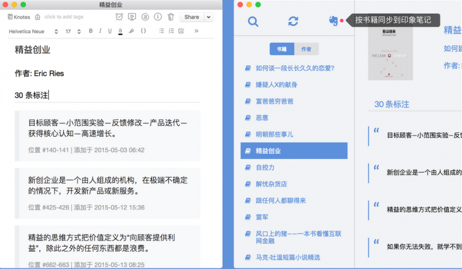

系统支持：Mac OS & Windowns
1. 多种管理方式
你可以按照“书籍”或者“作者”来管理你的标注和笔记，例如你可以按照《解忧杂货店》或者作者东野圭吾来进行标注。
2. 快速全文搜索
如果你需要搜索曾经的标注或者笔记，可以根据书籍的名称、作者或者对书籍的标注来进行搜索，更快的获取你想要的内容。
3. 导出书籍标注
鼠标右击书籍可以将书籍的标注导出为Markdown或者PDF格式的文件，方便以后在其它的平台继续阅读。
4. 同步到Evernote（印象笔记）
Knotes可以将你的Kindle标注与笔记同步到你的印象笔记中，也可以根据你的需要加上书名、作者、Knotes标签，将你获取的知识规整起来，建立成一个知识库。同时这个软件支持增量传输，后期添加的标注快速的同步到印象笔记。
5. 分享微信朋友圈
Knotes支持微信朋友圈的分享，可以在你想分享的标注下点击微信图标，便会生成一个二维码，扫描二维码即可保存图片并分享到朋友圈。